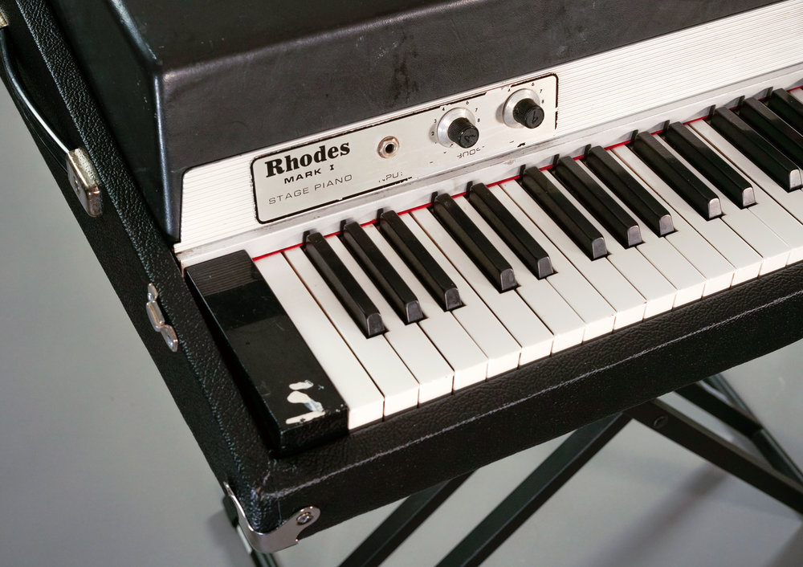
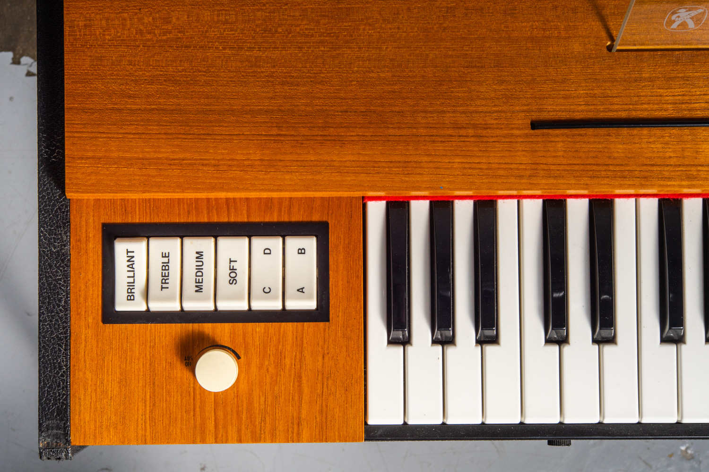
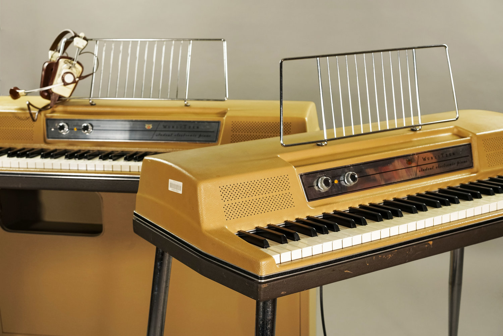

Photo
|
Description
|
Price
|
|

|
The Rhodes piano is an electro-mechanical piano, invented by Harold
Rhodes during the fifties and later manufactured in a number of models
...
|
$1400 |
|

|
The Clavinet is an electrically amplified clavichord invented by Ernst
Zacharias and manufactured by the Hohner company of Trossingen, West
Germany, from 1964 to 1982. The instrument produces sounds by a rubber
pad striking a point on a tensioned string, and was designed to
resemble the Renaissance-era clavichord.
|
$1600 |
|

|
The Rudolph Wurlitzer Company, usually referred to as simply
Wurlitzer, is an American company started in Cincinnati in 1853 by
German immigrant (Franz) Rudolph Wurlitzer.
|
$1200 |